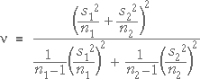

Examples
These examples show how to calculate and interpret a 95% confidence interval for µ2 - µ1.
(You could mention that an alternative for the degrees of freedom that gives a slightly lower t-value is
 )